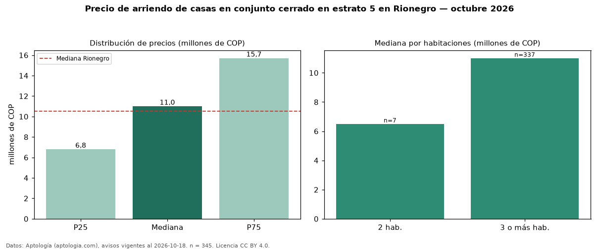

Precio de arriendo de casas en conjunto cerrado en estrato 5 en Rionegro — octubre 2026
COP 11 millones al mes es el canon mediano de casas en conjunto cerrado en estrato 5 en arriendo en Rionegro (n = 345 avisos). Prácticamente coincide con la mediana de las casas en estrato 5 en arriendo de Rionegro (COP 11 millones, n = 648); este segmento reúne el 53 % de esos avisos. Por metro cuadrado, la mediana es COP 37.500/m² al mes (n = 319), 0 % por encima de las casas en estrato 5 en arriendo de Rionegro (COP 37.500/m²). El área mediana anunciada es 300 m². El segmento con más oferta es el de 3 o más habitaciones (337 avisos, mediana COP 11 millones); pasar de 2 habitaciones a 3 o más habitaciones cambia la mediana +69 %. La mitad central de los avisos va de COP 6,80 millones a COP 15,70 millones (razón 2,3), una dispersión alta. La administración mediana declarada es COP 684.500 al mes (n = 48), aparte del canon. La mediana de todas las casas en arriendo de Rionegro es COP 10,50 millones (+5 % de diferencia). Datos: Aptología (aptologia.com), CC BY 4.0 — https://www.aptologia.com/arriendo/rionegro. Archivos: PDF, CSV con las cifras y gráfica PNG.

| Avisos únicos | 345 |
|---|---|
| Percentil 25 | COP 6.800.000 |
| Mediana | COP 11.000.000 |
| Percentil 75 | COP 15.700.000 |
| Mediana por m² | COP 37.500 |
Fuente: avisos vigentes de portales inmobiliarios recopilados por Aptología, deduplicados (mínimo 30 avisos únicos por celda). Precios pedidos, no cerrados. Fecha: 2026-10-18.